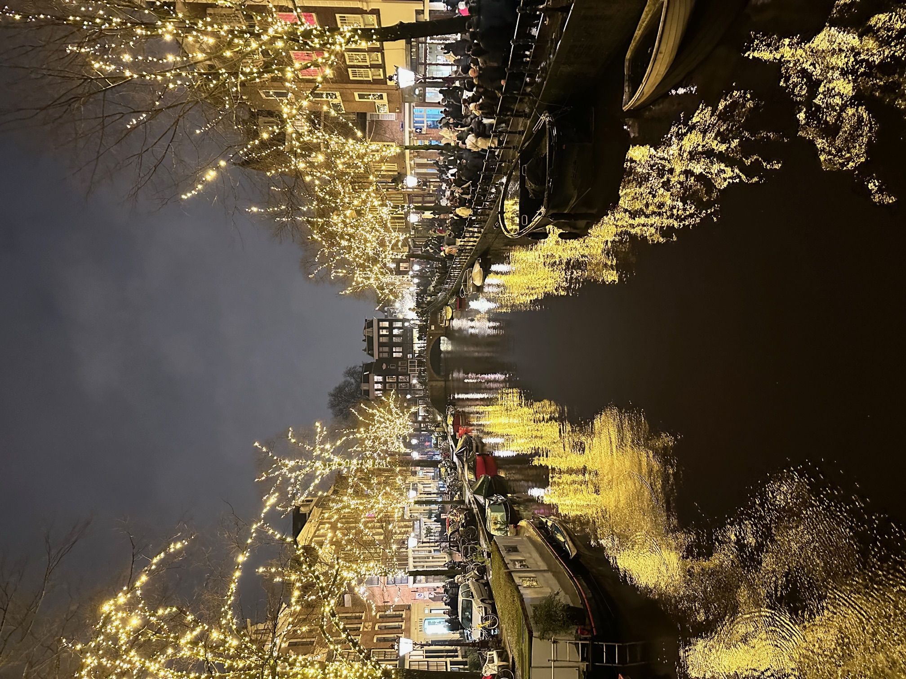
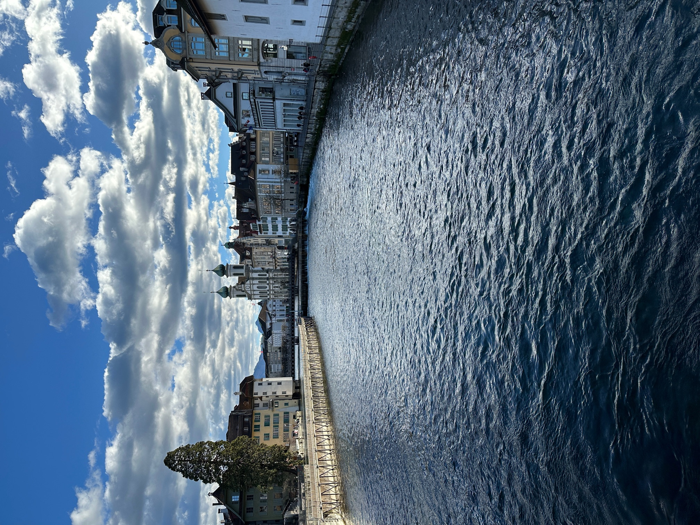
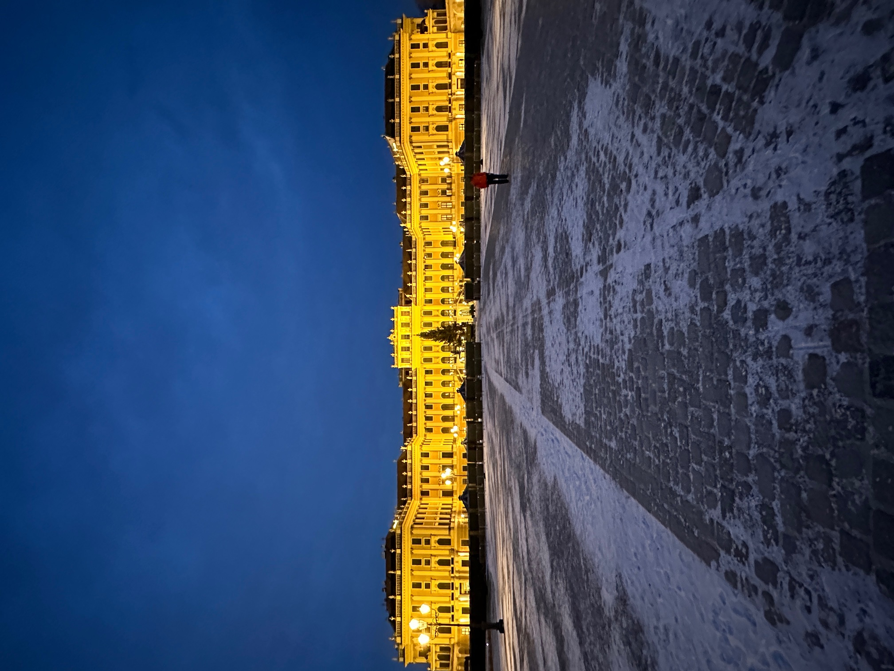

Photography is not one of my hobbies. That being said here are some pictures of my last trip to Europe.
Amsterdam

Spent a few days in Amsterdam and the city was full of canals. During my time the Christmas lights were still out.
Switzerland

Next on our trip was Lucerne, Switzerland. This city just 45 min away from Zurich was worth the early morning.
Austria

Last on our itinerary was Vienna, Austria. While here we could not miss the Schönbrunn Palace. The Palace was immense and inside had art of different periods. It was a very cold January day in Vienna
so we decided to take it easy and roam around the inside shortly after this picture was taken.
In Vienna we decided to sit and take in one of the many classical music concert they had around the city.